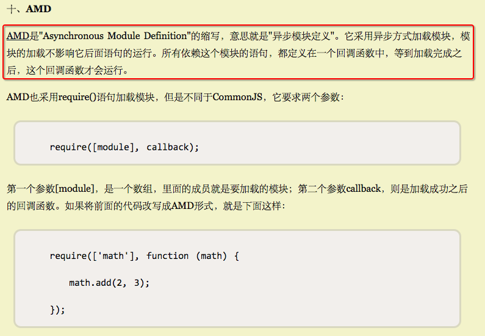
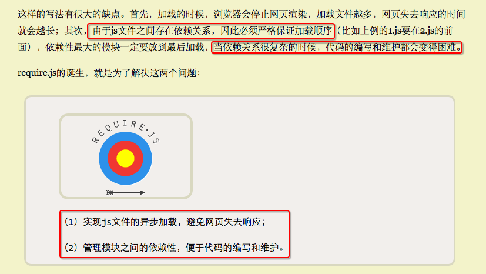

[JS]阮一峰关于JS模块化的三篇博客
关于JS模块化的内容，最近看到了阮一峰写的三篇文章，解析的听好的，特拿来学习，并写了读书笔记。
在这三篇文章中看到了很多让人觉得恍然大悟的说明，特摘录下来。
1. 模块的写法
…理想情况下，开发者只需要实现核心的业务逻辑，其他都可以加载别人已经写好的模块。…
2. AMD规范
…老实说，在浏览器环境下，没有模块也不是特别大的问题，毕竟网页程序的复杂性有限；但是在服务器端，一定要有模块，与操作系统和其他应用程序互动，否则根本没法编程。
…node.js的模块系统，就是参照CommonJS规范实现的。在CommonJS中，有一个全局性方法require()，用于加载模块。
…

3. require.js的用法
…
4. 疑惑
关于CommonJS / AMD / CMD / require.js / sea.js这些之间的关系是什么还没有特别搞清楚，这个还需要写一篇专门的总结文章。